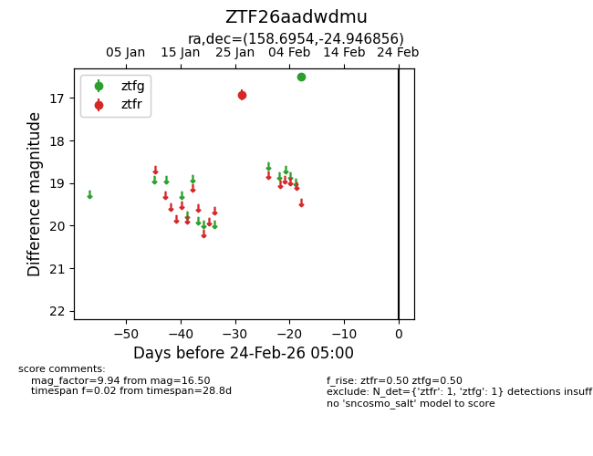
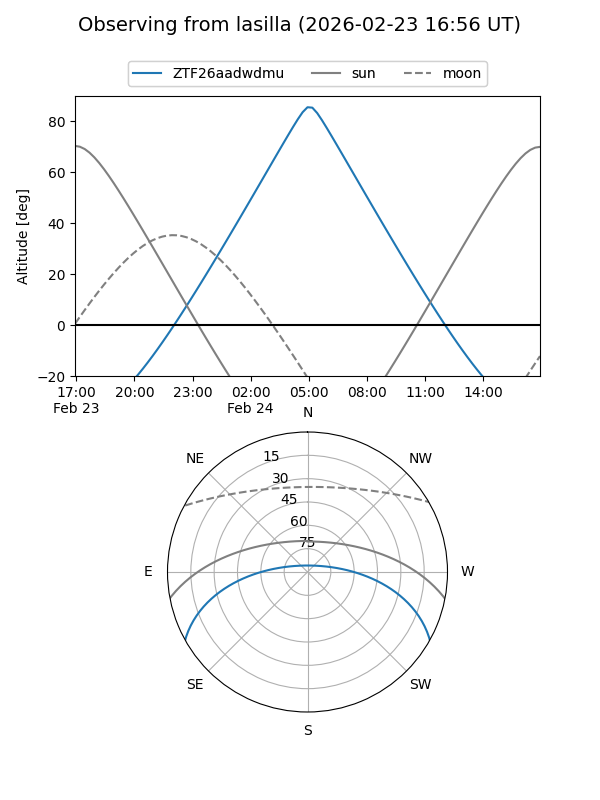
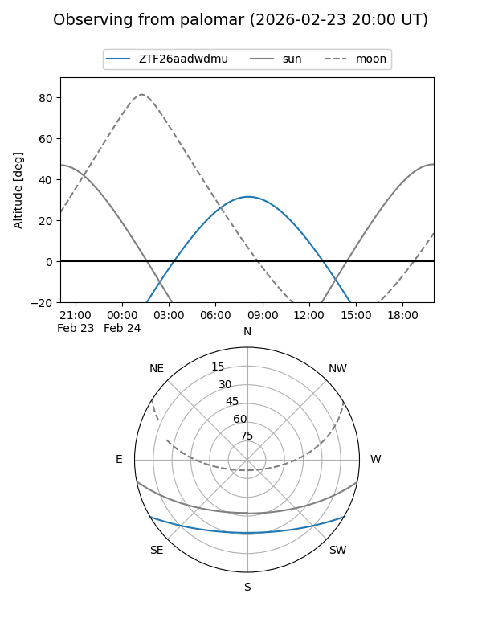

ZTF26aadwdmu
Target ZTF26aadwdmu at 2026-02-24 09:08
Aliases and brokers:
FINK: link
Lasair: link
ALeRCE: link
alt names
ZTF26aadwdmu (ztf,fink_ztf)
Coordinates:
equatorial (ra, dec) = 158.6954,-24.94686
equatorial (HMS+DMS) = 10:34:46.91,-24:56:48.68
galactic (l, b) = (267.5696,+28.38376)
Flags:
Photometry:
last ztfg=16.50, ztfr=16.93
1 ztfg, 1 ztfr detections
Lightcurve

Visibility


Additional plots